Research Phase
Research Question
The design process for the Audiobook application began with a clear research question:
How to help people learn anytime, anywhere?
User Interviews and Affinity Diagram
To gain valuable insights, a series of user interviews were conducted with individuals who
regularly use audiobook platforms. The collected data was organized using an affinity diagram,
allowing us to identify common themes, pain points, and user preferences.
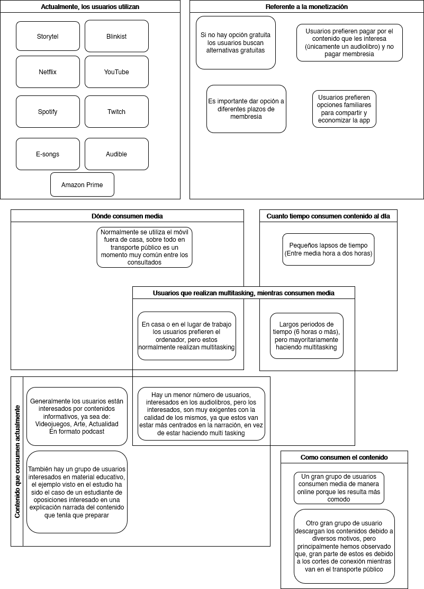
User Personas, Scenarios, and User Journeys
Based on the findings, detailed user personas were developed to represent key audience segments.
Scenarios and user journeys were then created to map out the different ways users might interact
with the application, providing a holistic understanding of their needs and expectations.
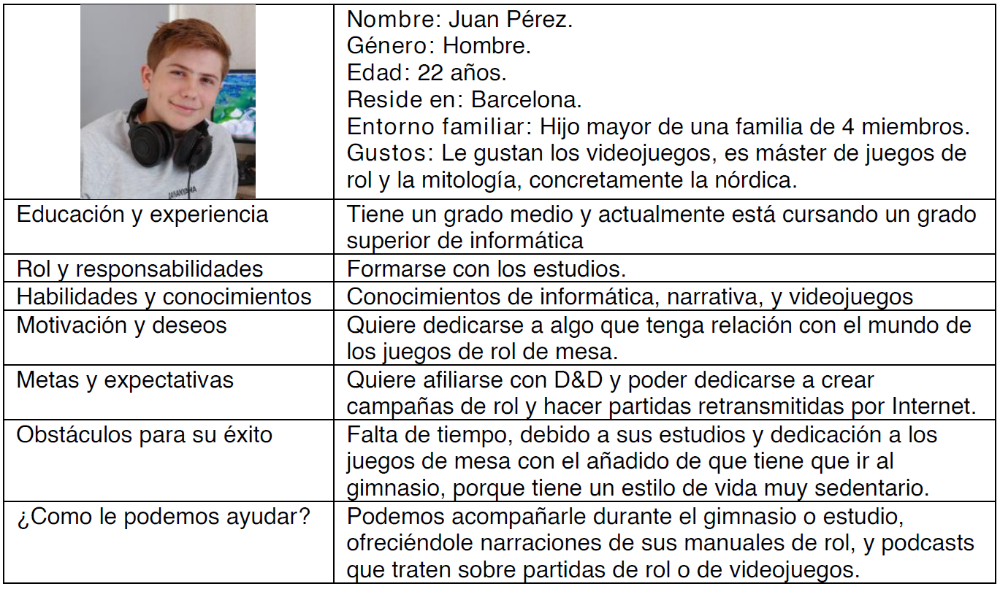
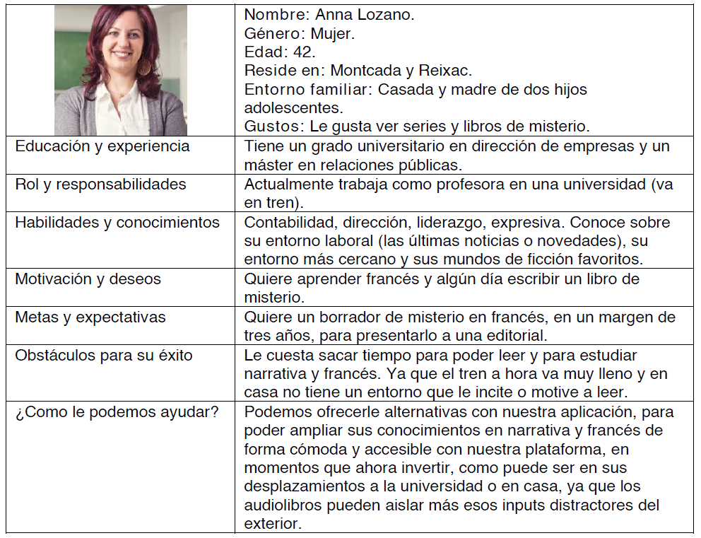
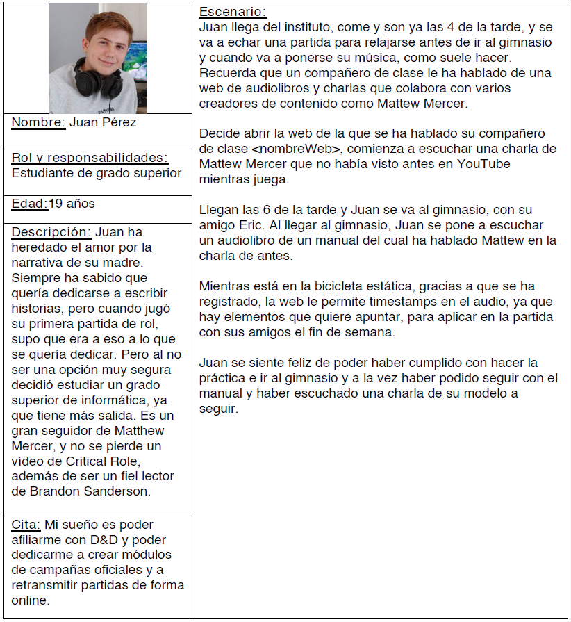
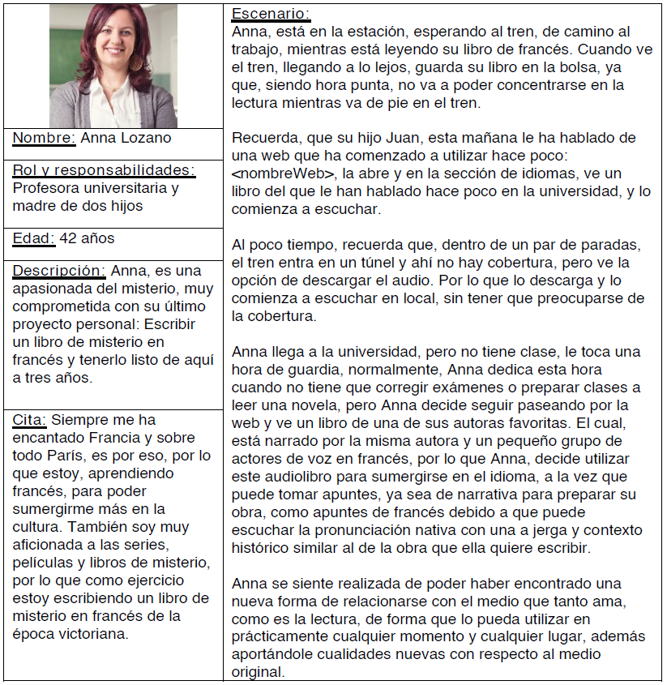
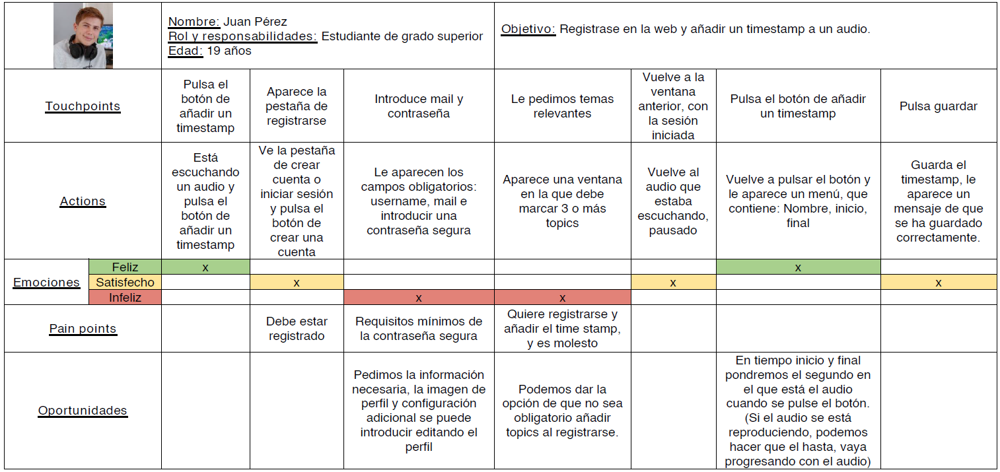
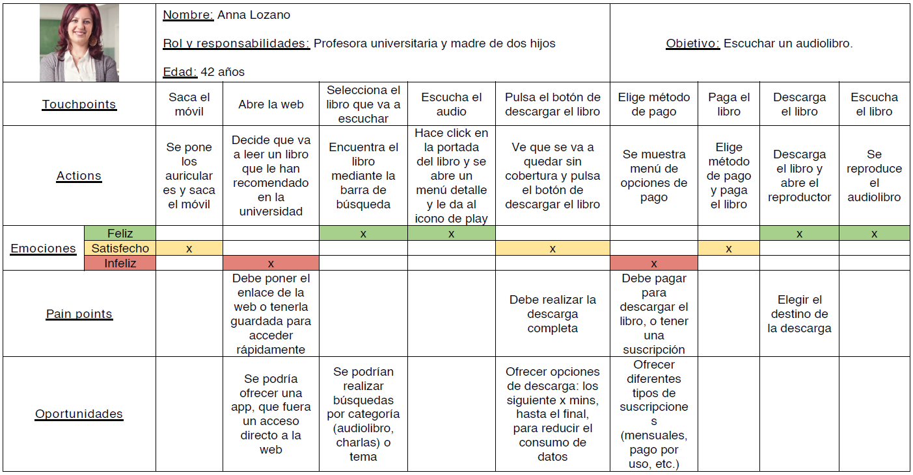
Design Phase
Objectives
With a solid understanding of user needs, the design objectives were defined. These objectives
focused on creating a user-centric audiobook application that prioritizes ease of use,
personalization, and an immersive listening experience.
Functional Objectives
Upon
entering the website, the first thing displayed will be a feed featuring the latest
uploads or the most relevant content that may interest the user.
Any
registered user can upload talks/audiobooks to the website.
When
adding an audio, users can assign categories and provide a brief description.
Users can
add timestamps to an audio, which will be saved only for the creator (the
listener). However, creators can also choose to add timestamps visible to everyone.
The top
of the application will feature the search bar, along with the website logo and
user profile. For unregistered users, a message will be displayed.
Text
entered in the search bar will apply a text filter and display results with matching
text in the title. Clicking the search icon will open an advanced menu for filtering audio
by topics.
Premium
registered users will be allowed to download audios in a format compatible with
most players (.ogg, .mp3).
Non-Functional Objectives
When
downloading an audio, users can choose to download the complete audio or from the
point they left off to the end, or specify a custom time range to save user data.
Information Objectives
During
registration, users will only provide:
Unique username
Email
Password (meeting minimum secure password requirements)
Optionally, a series of topics of interest to the user
Additional information such as profile picture, country, age, gender, and a brief
description can be added in the user's profile under the editing option.
For unregistered users, the browser's cookies will store their history. Registered
users will have a history that can be viewed by the user, similar to YouTube, for
personalized recommendations.
Environmental Objectives
The
website will have two default display modes: a lighter mode and a darker mode, known as day
and night modes. Registered users can customize these modes similar to Twitter.
The UI
will not display ads to maintain a formal environment. Instead, ads will be in
audio format played when accessing content on the platform
The
website will integrate various payment and subscription services, offering users
flexibility in choosing the most convenient option.
Interaction
After establishing our objectives, we employed card sorting with users to define the
content
hierarchy of the application.
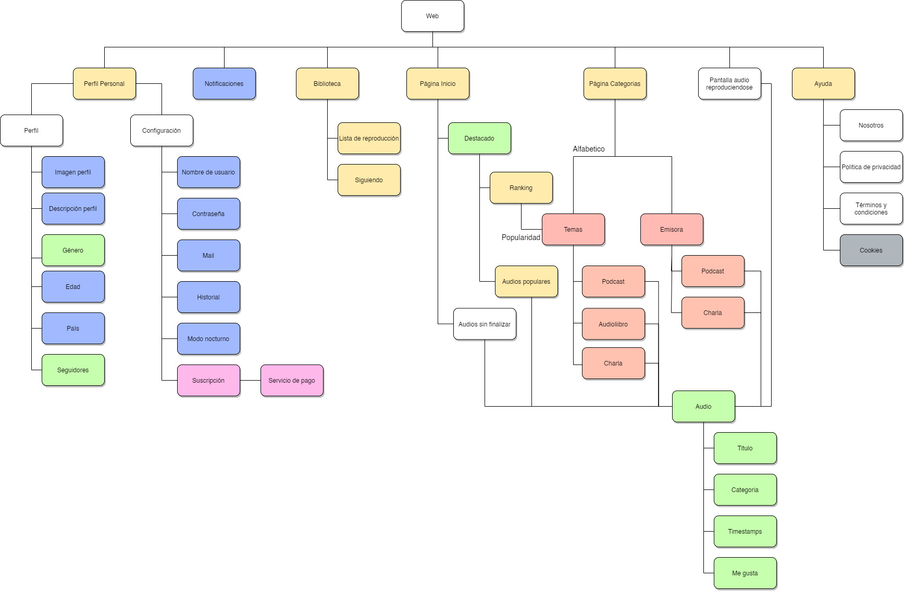
And then I definied the first interaction diagram:
Finally I proceeded to the prototype and the final interaction flows
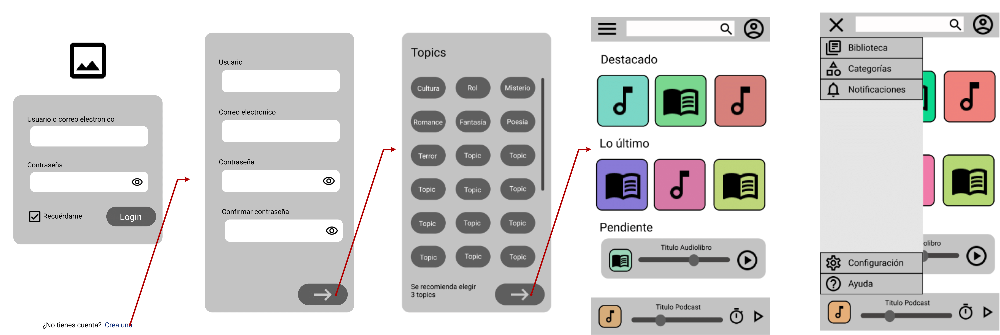
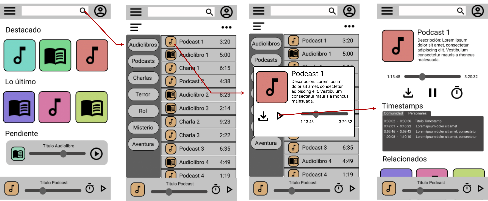
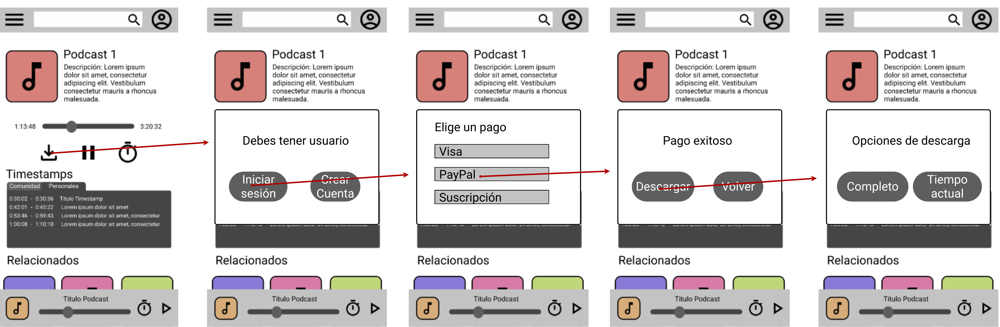
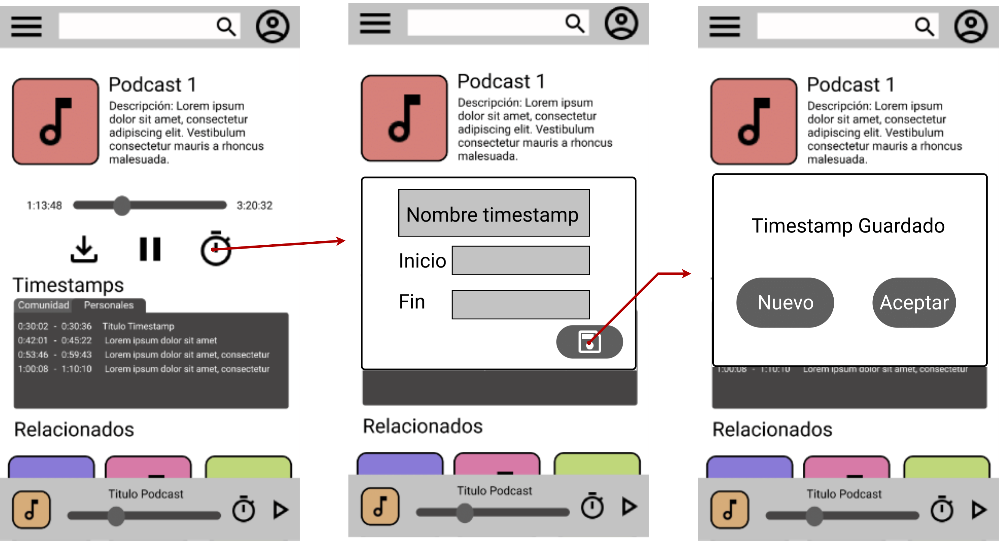